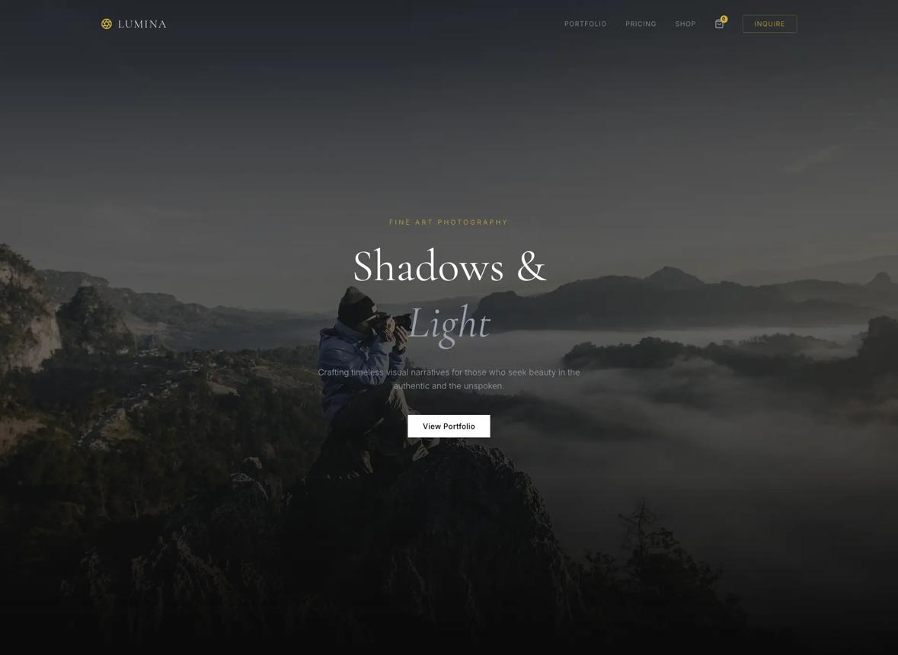

TC 00:18:41:02

I · Viento en el Fiordo
Documental de boda íntima bajo lluvia austral e iluminación de antorchas.

Dirigimos y fotografiamos bodas de destino en la Patagonia, cortometrajes documentales y retratos dramáticos utilizando ópticas de cine Cooke y revelado emulado en celuloide 35mm.

Negros densos, altas luces doradas cálidas y curva en S clásica de proyección en sala oscura.
Documental de boda íntima bajo lluvia austral e iluminación de antorchas.

Retrato de autor para músicos de cámara con un único haz de luz cenital.

Serie documental de expedición invernal en los bosques templados del sur.
La luz dura del mediodía aplana la emoción. En NOCTURNE CINEMA esperamos el crepúsculo, la niebla o la penumbra interior de una casona antigua para esculpir los rostros mediante sombras profundas.
Cada entrega incluye una galería inmersiva sobre fondo negro absoluto y un cortometraje en 4K DCI con diseño sonoro original.
“Ver nuestras fotografías de boda fue como entrar a una sala de cine europeo. La calidez del grano y el manejo de las sombras en la cena a la luz de las velas superó todo lo que imaginábamos.”
Ignacio & Florencia · Boda en Lago Llanquihue (Ejemplo Ficticio)“Contratamos a NOCTURNE para el documental de nuestra viña familiar. Su dominio del lenguaje cinematográfico elevó la percepción internacional de nuestra marca.”
Rodrigo Errázuriz · Director de Viña Oscura (Ejemplo Ficticio)Aceptamos un máximo de 14 producciones anuales para garantizar que el director principal realice personalmente la captura y el etalonaje completo.
Base de Operaciones: Valdivia · Santiago · Buenos Aires
